For most choices of  and
and  , the GS equation has to be
solved numerically. For the particular choice of 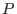 and
, the GS equation has to be
solved numerically. For the particular choice of 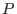 and  profiles,
profiles,
analytical solution to the GS equation can be found, which is given
by[9]
where  , 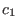, , and
, 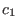, , and  are arbitrary constants. [Proof: By
direct substitution, we can verify
are arbitrary constants. [Proof: By
direct substitution, we can verify  of this form is indeed a solution to
the GS equation (53).] A useful choice for tokamak application is to
set
of this form is indeed a solution to
the GS equation (53).] A useful choice for tokamak application is to
set
 ,
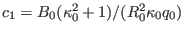, and 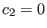. Then Eq. (71) is written
,
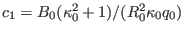, and 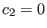. Then Eq. (71) is written
which can be solved analytically to give the explicit form of the contour of
on  plane:
plane:
which indicates the magnetic surfaces are up-down symmetrical. Using Eq.
(69), i.e.,
the pressure is written
where  is a constant of integration. Note Eq. (72) indicates
that that at the magnetic axis (
). Therefore, Eq.
(75) indicates that is the pressure at the magnetic axis. The
toroidal field function is a constant in this case, which implies there is
no poloidal current in this equilibrium. (For the Solovev equilibrium
(72), I found numerically that the value of the safety factor at the
magnetic axis (
) is equal to
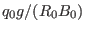. This result
should be able to be proved analytically. I will do this later. In calculating
the safety factor, we also need the expression of
is a constant of integration. Note Eq. (72) indicates
that that at the magnetic axis (
). Therefore, Eq.
(75) indicates that is the pressure at the magnetic axis. The
toroidal field function is a constant in this case, which implies there is
no poloidal current in this equilibrium. (For the Solovev equilibrium
(72), I found numerically that the value of the safety factor at the
magnetic axis (
) is equal to
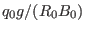. This result
should be able to be proved analytically. I will do this later. In calculating
the safety factor, we also need the expression of
 , which is
given analytically by
, which is
given analytically by
)
Define
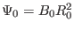, and
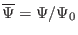, then Eq.
(72) is written as
|
 |
|
(77) |
where
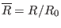,
. From Eq.
(77), we obtain
Given the value of ,  , for each value of
, we
can plot a magnetic surface on
plane. An
example of the nested magnetic surfaces is shown in Fig. 6.
, for each value of
, we
can plot a magnetic surface on
plane. An
example of the nested magnetic surfaces is shown in Fig. 6.
Figure 6:
Flux surfaces of Solovév equilibrium for
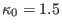 and 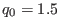, with
varying from zero
(center) to 0.123 (edge). The value of
on the edge is
determined by the requirement that the minimum of
is equal to
zero. (To prevent ``divided by zero'' that appears in Eq. (78)
when , the value of
on the edge is shifted to
when plotting the above figure, where
 is
a small number,
in this case.)
is
a small number,
in this case.)
|
The minor radius of a magnetic surface of the Solovev equilibrium can be
calculated by using Eq. (73), which gives
and thus
where
. In my code of constructing Solovev
magnetic surface, the value of  is specified by users, and then Eq.
(81) is solved numerically to obtain the value of of the flux
surface. Note that the case corresponds to
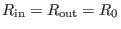, i.e., the magnetic axis, while the case
corresponds to
. Therefore, the
reasonable value of of a magnetic surface should be in the range
is specified by users, and then Eq.
(81) is solved numerically to obtain the value of of the flux
surface. Note that the case corresponds to
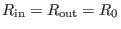, i.e., the magnetic axis, while the case
corresponds to
. Therefore, the
reasonable value of of a magnetic surface should be in the range
 . This range is used as the
interval bracketing a root in the bisection root finder.
. This range is used as the
interval bracketing a root in the bisection root finder.
Using Eq. (81), the inverse aspect ratio of a magnetic surface
labeled by can be approximated as[9]
Therefore, the value of of a magnetic surface with the inverse aspect
ratio
is approximately given by
yj
2018-03-09